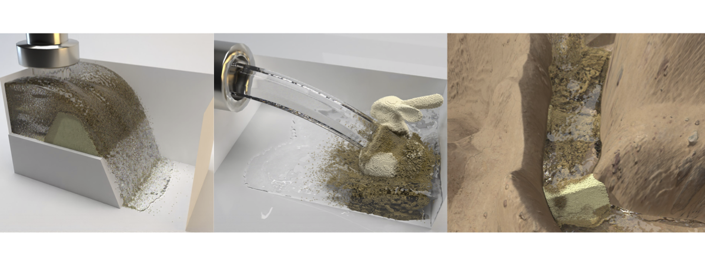

Visual Simulation of Soil-Structure Destruction with Seepage Flows
University of Tsukuba1
ACM SIGGRAPH/Eurographics Symposium on Computer Animation, 2021

Abstract: This paper introduces a method for simulating soil-structure coupling with water, which involves a series of visual effects, including wet granular materials, seepage flows, capillary action between grains, and dam breaking simulation. We develop a seepage flow based SPH-DEM framework to handle soil and water particles interactions through a momentum exchange term. In this framework, water is seen as a seepage flow through porous media by Darcy's law; the seepage rate and the soil permeability are manipulated according to drag coefficient and soil porosity. A water saturation-based capillary model is used to capture various soil behaviors such as sandy soil and clay soil. Furthermore, the capillary model can dynamically adjust liquid bridge forces induced by surface tension between soil particles. The adhesion model describes the attraction ability between soil surfaces and water particles to achieve various visual effects for soil and water. Lastly, this framework can capture the complicated dam-breaking scenarios caused by overtopping flow or internal seepage erosion that are challenging to simulate.